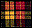
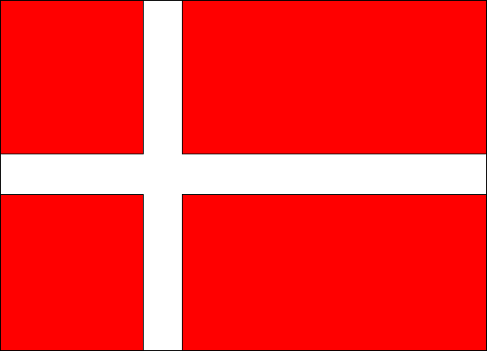

Keywords:Joseph F. Buchanan, genealogy, flags, Celtic, German, Danish, Mayflower, Buchanan, Workman, histories
Genealogy Information
LDS Family Search site
New Family Search system
Community Trees
Archie Earl Buchanan/Florene Davis Family History
Eddie M. Jacobson/Sarah Delilah Anderson Family History
Heber F. Burton/Mary Delecta Ballantyne Family History
John Workman Family History
Danish Resources:
Danish Census search
Danish State Archives: Search Church Records
Danish State Archives: Search Military Levying Rolls
Danish Emigration Archives
Danish Cemetery registry
Aurelia Clemons probates extraction
Copenhagen City Political Records search
Danish research helps
US Cemeteries search
Find A Grave
Utah Death Certificates search
Utah Digital Newspapers
Pioneer Company Search
Genealogy on the World-Wide Web,
50000 Genealogy Links,
Mayflower Names,
Manx Genealogy
Buchanan Coat of Arms
 Buchanan Tartan
Flags of some countries of my ancestry (Click on a flag for histories):
American Histories,
Histories of my ancestors (index)
Joseph F. Buchanan
(more information to come)
Last updated 7/215/2025